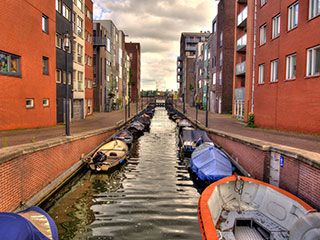

Amsterdam flower market

Amsterdam, Netherlands
The Amsterdam Flower Market is the only floating flower market in the world, located along the Singel Canal in the heart of the city. Open year-round, this market is a vibrant showcase of Dutch floriculture, where visitors can buy fresh flowers, including the famous Dutch tulips, as well as bulbs to plant at home. The stalls are set on houseboats, reflecting Amsterdam’s canal-centric culture. A popular tourist spot, the flower market is an essential stop for those looking to experience the beauty of Dutch blooms and take a piece of the Netherlands’ horticultural heritage back with them.

343

12
